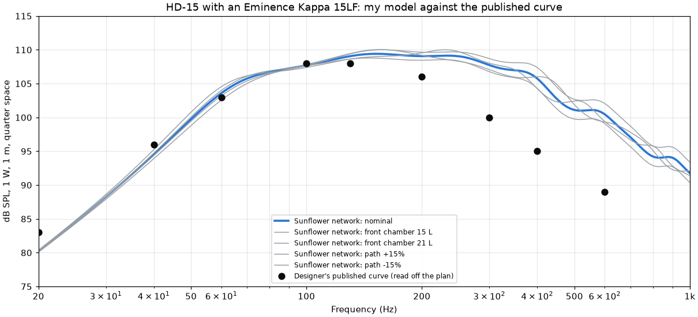
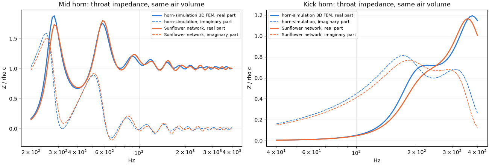
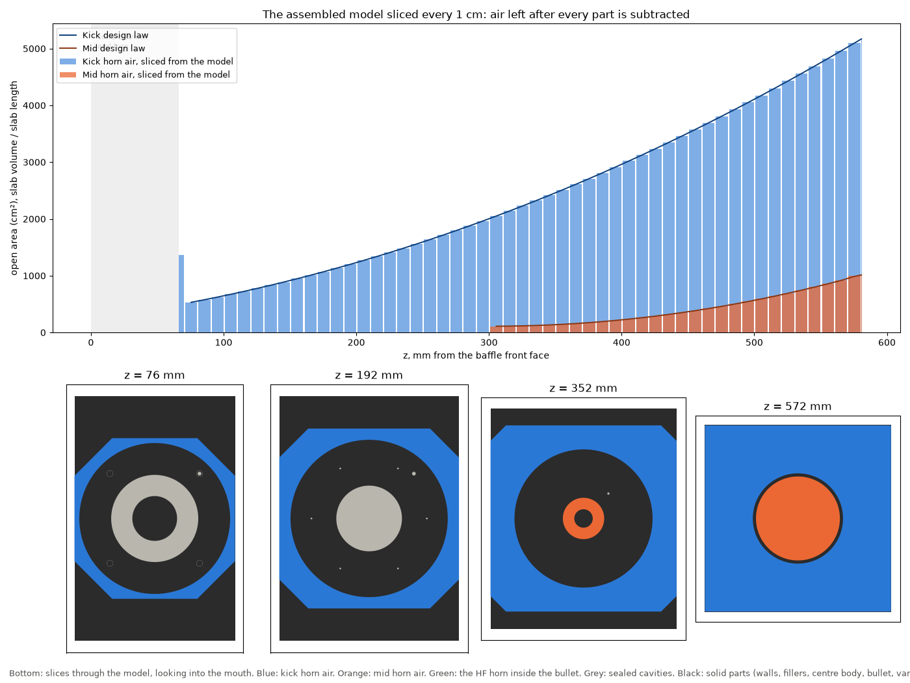
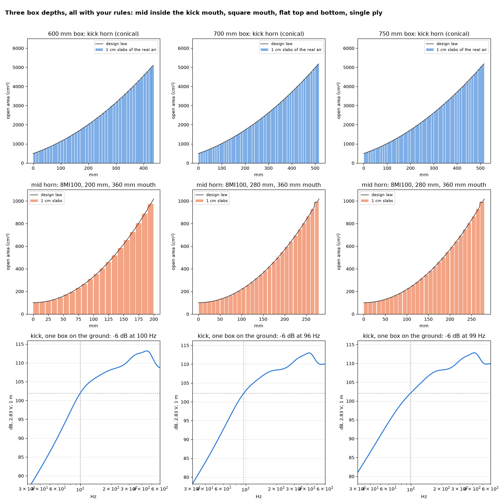

Validation
What the models were checked against, and where they fall short. Every number on this page comes from
the files in results/validation/ and results/fem/.
1. A known box: the HD-15
The HD-15 (Rog Mogale, Speakerplans, 2001) is a 15 inch kick and bass bin with a published plan and response. Modelled with the same plane-wave network Sunflower uses, with the Eminence Kappa 15LF from the plan, it matches the published curve within about 1.5 dB from 40 to 130 Hz. Above 200 Hz the model reads 3 to 11 dB higher than the published curve, which itself looks like a simulation. Its wedge-shaped front chamber is lumped as one volume in the model, which is the likely cause.

2. An independent solver: horn-simulation
The real air volumes of the Sunflower mid and kick horns were exported as STEP and solved in 3D by the separate horn-simulation FEM pipeline. Its throat impedance agrees with the Sunflower network: median difference 4% for the mid horn and 8% for the kick horn (90th percentile 9% and 13%).

3. The whole kick, with the cone moving
The axisymmetric FEM with the reversed cone as a vibrating boundary agrees with the network within 0.5 dB RMS (0.8 dB worst) from 40 to 250 Hz. A 3D model of the square frustum with its corner fillers agrees with the round equal-area model within about 0.7 dB in the same band.
4. Where the network is wrong: the mid's top end
The air between the mid cone and its phase plug behaves as a cavity that the plane-wave network cannot represent. The FEM shows the cone's radiation resistance collapsing above about 3 kHz on an 8 inch, and earlier on bigger cones. The network overstates the top end by 0.5 to 5 kHz, so mids are ranked on the FEM, not the network.
| Size | Driver | Mid horn | -6 dB, FEM | -6 dB, network |
|---|---|---|---|---|
| 10in | 18sound-10nw650 | 160 mm | 1.6 kHz | 1.7 kHz |
| 12in | prv-12mr1000-pro | 160 mm | 1.6 kHz | 2.4 kHz |
| 6.5in | bc-6ndl38 | 160 mm | 2.0 kHz | 2.4 kHz |
| 8in | beyma-8mi100 | 160 mm | 2.4 kHz | 3.4 kHz |
| 10in | 18sound-10nw650 | 240 mm | 1.6 kHz | 2.2 kHz |
| 12in | 18sound-12nmb420 | 240 mm | 1.9 kHz | 6.7 kHz |
| 6.5in | bc-6ndl38 | 240 mm | 1.9 kHz | 2.4 kHz |
| 8in | beyma-8mi100 | 240 mm | 2.6 kHz | 4.0 kHz |
Tried with the FEM on the 8 inch: compression ratio (2.2 is best; more is worse), a tighter gap (helps, limited by excursion), one and two annular slots (no gain), closing the HF bore (no change), and felt under the bullet (removes a separate centre-cavity notch near 3.6 kHz). The remaining limit is set by the depth of the cone, so the upper crossover is 3 kHz. The real cone must be measured: the profile used here is estimated from the datasheet.
5. The geometry: slicing the real model
The assembled model (every part the renders use) is cut every 1 cm. At each cut the inside of the walls, less every part (wedges, corner fillers, centre body, phase plug, felt, vanes, standoffs and the drivers), is the air. The phase plugs are sized from these slices, so the measured open area follows each horn's law with every obstruction counted.

6. Box depth
